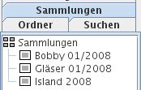

Im Kartenreiter Sammlungen können Sie Bildsammlungen anzeigen. Eine Bildsammlung ist eine beliebige Auswahl von Bildern, beispielsweise alle Bilder Ihrer letzten Reise oder Ihre besten Landschaftsfotos.

Klicken Sie mit der linken Maustaste auf eine Bildsammlung, werden in der Fenstermitte ihre Vorschaubilder angezeigt. Die rechte Maustaste zeigt ein Kontextmenü mit verschiedenen Optionen.